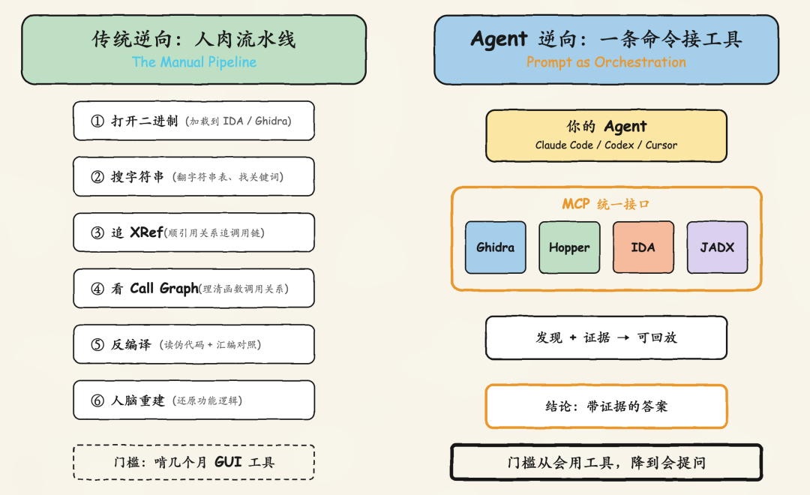
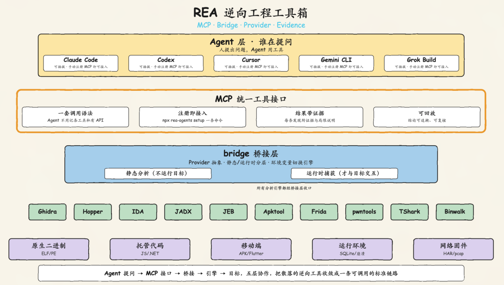
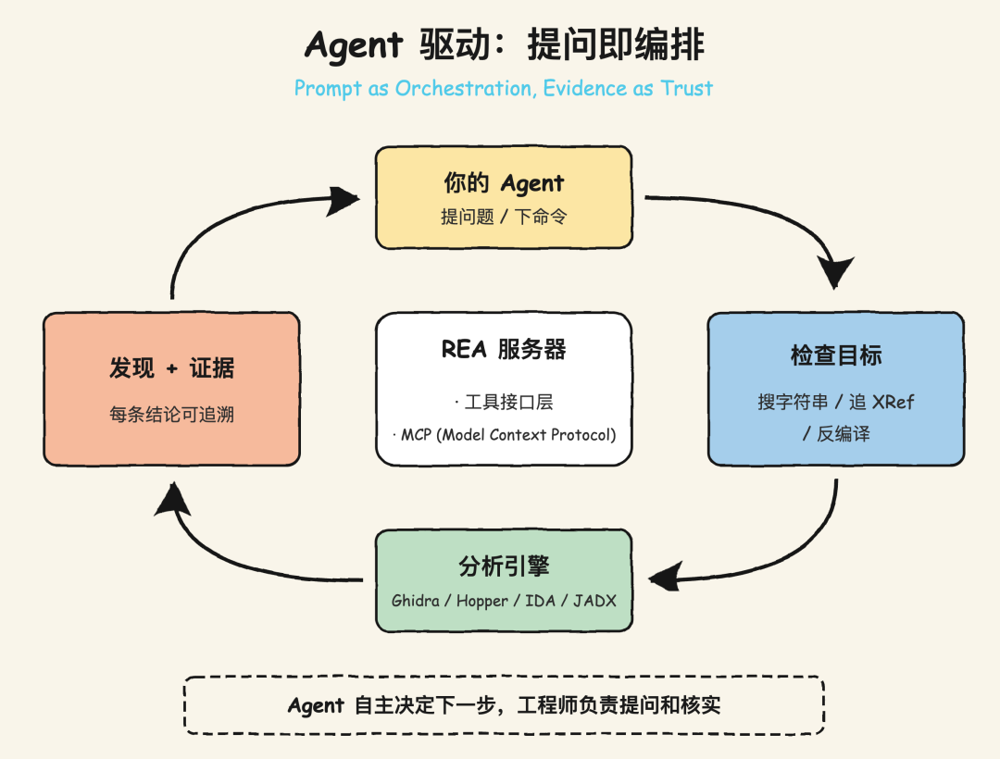
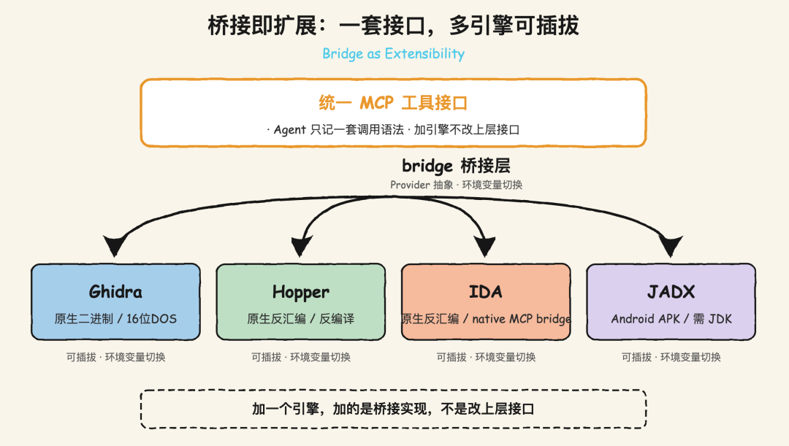
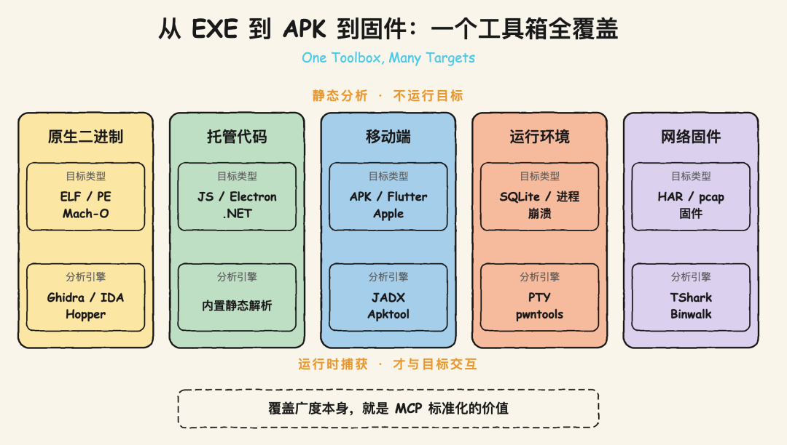
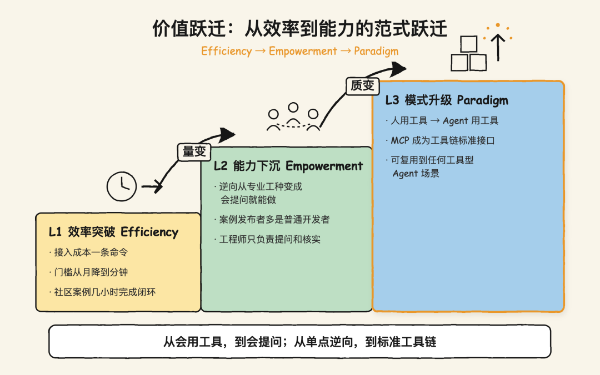
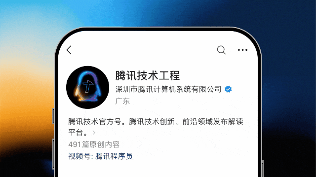

把逆向工程交给 Agent：一文拆解爆火的 REA 技术原理
来源：微信公众号 归档日期：2026-10-15 抓取状态：成功 原文字符：6651｜配图：7 张
摘要速览
- 作者：stevenzuo 大家遇到的一个最常见的场景：当你刷 App 时看到别人家有个功能做得不错，想在自己的产品里复刻一个，但人家不会给你源码。这时候想搞明白这功能到底怎么实现的，就只能从编译好的程序里反推逻辑，这件事就叫逆向工程。它跟"破解软件"是两回事，正经用途是恶意软件分析、漏洞研究、协议理解、旧系统兼容、恢复遗失源码。
核心内容
（待补充）
可执行启发
（待补充）
我的想法
（待补充）
原文沉淀
目录
- 2.1 工具不可调用
- 2.2 过程不可追溯
- 2.3 经验不可复用
- 2.4 问题本质：逆向不是算力问题，是编排问题
- 3.1 一句话概括
- 3.2 核心工作流闭环
- 3.3 一句话说清它解决了什么
- 4.1 桥接层：一套接口，多引擎可插拔
- 4.2 静态与运行时分层
- 4.3 结果契约：发现必须带证据
- 4.4 安装即注入：npx rea-agents setup
- 案例 1：DX-Ball 声音算法字节级还原
- 案例 2：Notion 剪贴板调用链全追踪
- 案例 3：东方 TH04 弹幕角度计算恢复
- 案例 4：Sony Sound Connect 独立 Android App
- 案例 5：射击游戏 99% 函数还原为 C++
- 6.1 量化对比
- 6.2 价值跃迁三重突破
- 6.3 方法论提炼
- 不适合的场景
- 核心判断
来源：https://mp.weixin.qq.com/s/IGu2tfumq3rbnra9yfgAQw 平台：weixin｜作者：腾讯技术工程 抓取方式：cdp｜字符数：7965｜图片：9

作者：stevenzuo
引言：10 月上旬一周内，GitHub 上一个叫 REA 的项目 Star 从 1.5 万冲到 23 万+，凭什么这么火？ REA 全称 Reverse Engineer Anything——逆向一切，要啃的是计算机领域一个由来已久的硬骨头：没有源码，如何从编译好的二进制里反推出软件的实现逻辑。过去这是逆向工程师用 Ghidra、IDA、Hopper 纯手搓死磕的苦活。本文深入拆解 REA 的工作机制与架构——逆向工程从"人用工具"切换到"Agent 用工具"，究竟是如何实现的。
一、背景与痛点：逆向工程是件手搓的活
大家遇到的一个最常见的场景：当你刷 App 时看到别人家有个功能做得不错，想在自己的产品里复刻一个，但人家不会给你源码。这时候想搞明白这功能到底怎么实现的，就只能从编译好的程序里反推逻辑，这件事就叫逆向工程。它跟"破解软件"是两回事，正经用途是恶意软件分析、漏洞研究、协议理解、旧系统兼容、恢复遗失源码。
问题在于，过去这件事全靠人肉：逆向工程师手动打开 IDA、Ghidra 这些工具一点点翻。工具本身很专业，但整条流程很原始，全靠手搓：

💡 痛点：逆向的门槛不在"工具难用"，而在"每一步怎么走、走到哪一步算完"——这些全装在逆向工程师的脑子里，光会操作工具还不够，还得靠多年积累的经验。
三个问题随之而来：
| 痛点 | 表现 |
|---|---|
| 工具散、门槛高 | IDA、Ghidra、Hopper、JADX 各有各的操作方式，入门要啃几个月的快捷键和概念 |
| 过程黑盒 | 一次逆向"为什么追这个 XRef、为什么进这个函数"，没有留档，别人无法复核 |
| 经验不沉淀 | 每个逆向工程师的套路是孤立的，换个目标、换个人，都要从头再来 |
说白了，逆向这活儿长期卡在两件事上：门槛高（得会熟练操作一堆专业工具），经验还带不走（全在人脑子里）。那能不能让 AI 编程助手自己来干？这正是 REA 在做的事。
二、三大挑战：为什么逆向一直是 Agent 的禁区
过去不是没人想让 AI 做逆向，是三个坎一直迈不过去。
2.1 工具不可调用
编程 Agent 擅长"读代码、写代码"，但 Ghidra、Hopper 这些是 GUI 桌面软件，没有统一的编程接口。Agent 想分析一个二进制，要么没法调工具，要么得为每个工具写一套胶水代码。工具和 Agent 之间，缺一个标准接口。
2.2 过程不可追溯
逆向的产出应该是一份"证据链"：这个函数在哪个地址、被谁调用、反编译出来是什么。但传统逆向的产出往往只有结论，没有中间证据。Agent 如果直接给结论，没人敢信；要让它给证据，得先把"发现"结构化。
2.3 经验不可复用
一个经验丰富逆向工程师——"先搜字符串、再追 XRef、可疑点回汇编验证"——是一套方法论。这套方法论写不进工具，也没法被另一个 Agent 复用。
三层叠加：工具接不上、过程没留痕、经验不沉淀，让"让 AI 做逆向"这件事，在 REA 出现之前一直停在 demo 层面。
2.4 问题本质：逆向不是算力问题，是编排问题
这三道坎背后是同一个根子：逆向的本质，是一套调查流程（search → XRef → call graph → decompile → 重建），不是单次算力调用。谁把这套流程标准化、接口化，谁就能让 Agent 跑起来。REA 做的就是这个。
三、整体思路：把工具接成 MCP 接口

3.1 一句话概括
逆向工程的本质，不是"会用工具"，而是"能调用工具并拿到带证据的结论"。
REA 的定位很克制：它不自研反编译引擎，而是做一个 MCP（Model Context Protocol）服务器，把 Hopper、Ghidra、IDA、JADX 这些已有工具包装成 Agent 能直接调用的接口。Agent 通过 MCP 问一句"这个搜索功能怎么实现的"，REA 去查目标、追踪代码，返回带证据的发现，Agent 再据此解释行为、写测试、重建实现。
3.2 核心工作流闭环

标准流程就是一条固定的调查链：打开二进制 → 搜索字符串 → 追 XRef → 看 Call Graph → 反编译 → Agent 重建功能。Agent 自主决定下一步搜什么字符串、追哪个 XRef、进哪个函数、何时回汇编验证。
3.3 一句话说清它解决了什么
| 挑战 | REA 的答案 |
|---|---|
| 工具不可调用 | MCP 标准化，把 GUI 工具接成编程接口 |
| 过程不可追溯 | 结果契约：每条发现都附带证据和局限说明 |
| 经验不可复用 | 安装时注入工作流指令（skill），调查方法论变成可复用的资产 |
四、架构拆解：四个关键设计
REA 的仓库是 TypeScript + Node.js，用 Turbo 管 monorepo，Vitest 做测试。真正值得说的是它的四层设计。
4.1 桥接层：一套接口，多引擎可插拔
🎯 挑战：Hopper、Ghidra、IDA 三家反编译器，各有各的 API 和启动方式，不可能让 Agent 记三套语法。
💡 解决方案：bridge/ 目录做统一桥接，把不同供应商的工具封装成一致的 MCP 工具接口。原生分析支持多 Provider 选择，用环境变量切换引擎：
# 用环境变量切换反编译引擎、调整启动超时
REA_HOPPER_STARTUP_TIMEOUT_MS=60000
REA_GHIDRA_STARTUP_TIMEOUT_MS=60000💡 敲重点：桥接即扩展——Bridge as Extensibility。加一个引擎，加的是桥接实现，不是改上层接口。

4.2 静态与运行时分层
🎯 挑战：不同的目标类型，分析方式完全不同。JavaScript、.NET 直接读文件就行，原生二进制要跑 Ghidra，Android 要上 JADX。
💡 解决方案：REA 按"静态 / 运行时"两层切。静态分析（JS、.NET、APK 解析）不运行目标、直接读文件；运行时捕获（进程行为、Frida 验证）才与目标交互。目标类型覆盖极广：
| 类别 | 目标 | 引擎 |
|---|---|---|
| 原生二进制 | ELF / PE / Mach-O | Hopper / Ghidra / IDA |
| 托管代码 | JavaScript / Electron / .NET | 内置静态解析 |
| 移动端 | Android APK / Flutter / Apple 包 | JADX + JDK / Apktool |
| 运行环境 | SQLite / 进程行为 / 崩溃 | Node.js / PTY / pwntools |
| 网络固件 | HAR / pcap / 固件 / 信号 | TShark / Binwalk / sigrok |

4.3 结果契约：发现必须带证据
🎯 挑战：Agent 给结论没用，得有证据支撑，否则不可信、不可复核。
💡 解决方案：所有分析结果都附带证据和局限性说明。Agent 拿到的不只是一个"函数是干这个的"，而是"这个函数在地址 X、被 Y 调用、反编译伪代码是 Z、结论的置信边界是 W"。这直接对标工程里的"结论可追溯"。
💡 敲重点：证据即可信——Evidence as Trust。逆向的产出不是答案，是一条能回放的证据链。
4.4 安装即注入：npx rea-agents setup
🎯 挑战：怎么让 Agent "学会"逆向的调查方法论，而不是只会调工具。
💡 解决方案：一条命令完成三件事——注册 MCP 服务器、安装工作流指令（skill）、备份现有配置：
npx rea-agents setupsetup 之后重启 Agent，它就有了逆向的调查能力。官方支持 Claude Code、Codex、Cursor、Gemini CLI、Grok Build 等，其他客户端可手动注册 MCP。这也解释了为什么它爆火：接入成本一条命令，价值却是整套逆向工具链。
| 决策 | 取舍理由 |
|---|---|
| 不做引擎、只做桥接 | 复用几十年沉淀的 Ghidra/IDA，专注解决"编排"这个真问题 |
| MCP 而非自建协议 | 借 MCP 生态，任何支持本地 MCP 的 Agent 都能用 |
| 结果带证据 | Agent 时代"结论可追溯"是硬门槛，不是可选项 |
五、实战案例：社区已经逆向出什么了
REA 爆火的另一半原因，是社区案例足够硬核，每个都能验证"它到底能不能干活"。
案例 1：DX-Ball 声音算法字节级还原
1996 年的老弹球游戏，从编译好的 x86 二进制里抠出声音左右声道定位函数，用 C 重写后跑了 3205 个原始测试用例全部通过，63 个编译字节与原版完全一致。这是官方最硬核的 showcase，证明了"不是看着像，是真的对上了"。
案例 2：Notion 剪贴板调用链全追踪
从 Electron 渲染进程的剪贴板 API 出发，穿过 preload 脚本、IPC 通道，一路追到主进程，把 Notion 富文本剪贴板的完整数据格式和消息 payload 全部扒了出来。Electron 三层架构的逆向，社区里最经典的案例之一。
案例 3：东方 TH04 弹幕角度计算恢复
PC-98 平台上的 16 位老游戏，从 16 位汇编指令里恢复了固定角度和瞄准角度两套弹幕计算逻辑，还把重建结果和历史编译器输出做了交叉验证。对 Mod 作者和老游戏保护者来说价值很大。
案例 4：Sony Sound Connect 独立 Android App
社区开发者连接 Samsung S24 Ultra，让 Codex 用 REA 分析 Sony 官方 App，逆向出 Wind Noise Reduction 功能的实现链路，做了一个独立 App——打开就能直接开启降噪。这是目前最接近"真实商业 App 功能提取"的案例。
案例 5：射击游戏 99% 函数还原为 C++
十几个 Agent 并行工作，把一款商业射击游戏 99% 的函数还原成了 C++，其中 83% 编译后和原程序逐字节一致。这个案例用的不是 REA 而是 Hex-Rays 官方 MCP，但同样属于这波 AI 逆向浪潮的代表作，说明了 Agent 并行逆向的可行性。
另有社区案例：YuriRDev 不到 12 小时逆向自有家居 IoT 软件实现电脑控制、greco 逆向自家电视、BrOrlandi 逆向公司体脂秤并开源 dashboard。这些的共同点：发布者都不是专业逆向工程师，而是"会提问的普通开发者"。
六、效果与方法论：从"会用工具"到"会提问"
6.1 量化对比
| 维度 | 传统逆向（人用工具） | Agent 逆向（REA） | 变化 |
|---|---|---|---|
| 入门门槛 | 啃几个月 GUI 工具 | 一条 npx rea-agents setup | 月 → 分钟 |
| 分析过程 | 在脑子里，无留档 | 每条发现带证据可回放 | 从无到有 |
| 经验复用 | 靠人传帮带 | 工作流指令 + 社区案例 | 资产化 |
| 目标规模 | 单点分析 | 可整体丢几十 MB 目标 | 量级跃升 |
6.2 价值跃迁三重突破

⚡ 量化提效：接入成本从"啃几个月工具"压到"一条命令"，社区案例从几小时到十几小时完成一个完整逆向闭环。 📥 能力下沉：逆向从专业工种，下沉到"会提问的工程师"——案例发布者里大量是普通开发者。 📚 模式升级：这件事真正的趋势意义，是"人提出需求、Agent 用工具"开始覆盖逆向这个原本最依赖人工经验的领域。
6.3 方法论提炼
6.3.1 桥接即扩展：Bridge as Extensibility
REA 不重写引擎，只做统一桥接。加一个反编译器是加桥接实现，上层接口不动。这比"自研一套逆向引擎"聪明得多——它站在 Ghidra、IDA 几十年沉淀的肩膀上，专注解决"编排"这个真正没被解决过的问题。
6.3.2 证据即可信：Evidence as Trust
Agent 时代的逆向产出不是"一个答案"，而是"一条能回放的证据链"。函数在哪、被谁调用、伪代码是什么、边界在哪，缺一样都不算可信。
6.3.3 提问即编排：Prompt as Orchestration
逆向的调查流程（搜字符串 → 追 XRef → 反编译 → 重建）被固化进工作流指令，Agent 自主决定下一步，工程师只负责提问和核实。
七、边界与局限：REA 现在还不能做什么
当然，REA 并不是"逆向一切"的法宝。
不适合的场景
- 复杂混淆、反调试、虚拟机壳：
遇到商业级加固，Agent 仍会卡住，这层是反编译引擎自身的边界，不是桥接能解决的。
- 内核级逻辑、驱动逆向：
需要的是更深层的动态调试能力，当前 REA 的静态优先路线覆盖不全。
- 需要法律授权的目标：
REA 明确声明只用于合法研究、教育、互操作性、软件保存，分析你拥有或被授权检查的软件。社区案例（逆向自家电视、自家体脂秤）都守着这条红线。
核心判断
场景是"分析一个有权检查的目标、想搞清功能怎么实现"，用 REA 很合适；场景是"破商业加固、碰 DRM"，REA 既做不了，也不该做。
结语
REA 爆火这件事，真正的信号不在"逆向工程火了"，而在它印证了一个已经发生多次的趋势：Agent 的能力边界，正在从"读代码、写代码"，扩到"调用任何工具"。逆向只是最新被"Agent 化"的一个领域，前面有代码生成，后面还会有更多。
它的价值不在技术有多新——桥接、MCP、结果契约，都是成熟的东西——而在它把这几样成熟的东西组合起来，回答了那个一直没被回答好的问题：逆向这套高度依赖经验的流程，怎么才能被标准化、接口化、交给 Agent。
逆向工程的门槛，从"会用工具"降到了"会提问"。这一降，降掉的不是门槛本身，而是一整个工种的经验壁垒。


归属：[[02-输入/按主题/AI与效率/_index|AI与效率]]